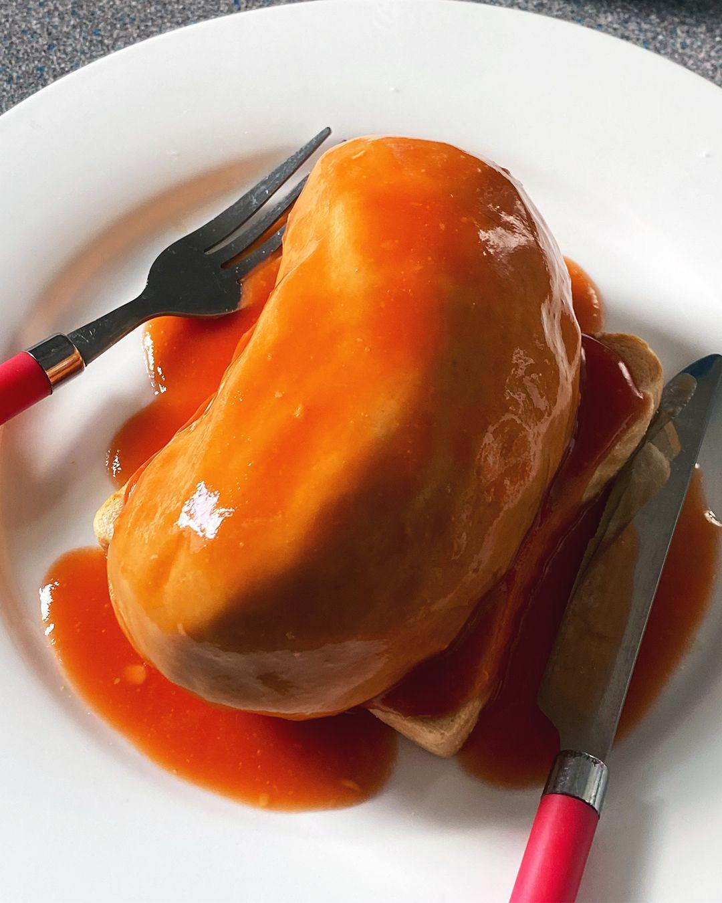

Beans And Toast

Now for a recipe from the worst people possible... the british. This plate is as boring as you get but doesn't have the class of a PB&J
Ingredients
- Bread
- Heinz baked beans in tomato sauce 220g
- hatred
Steps
- Open the bean can an pour into a saucepan to heat up
- Toast the bread once beans heat up
- Pour the beans on the toast
- Cry that you are british
- Enjoy